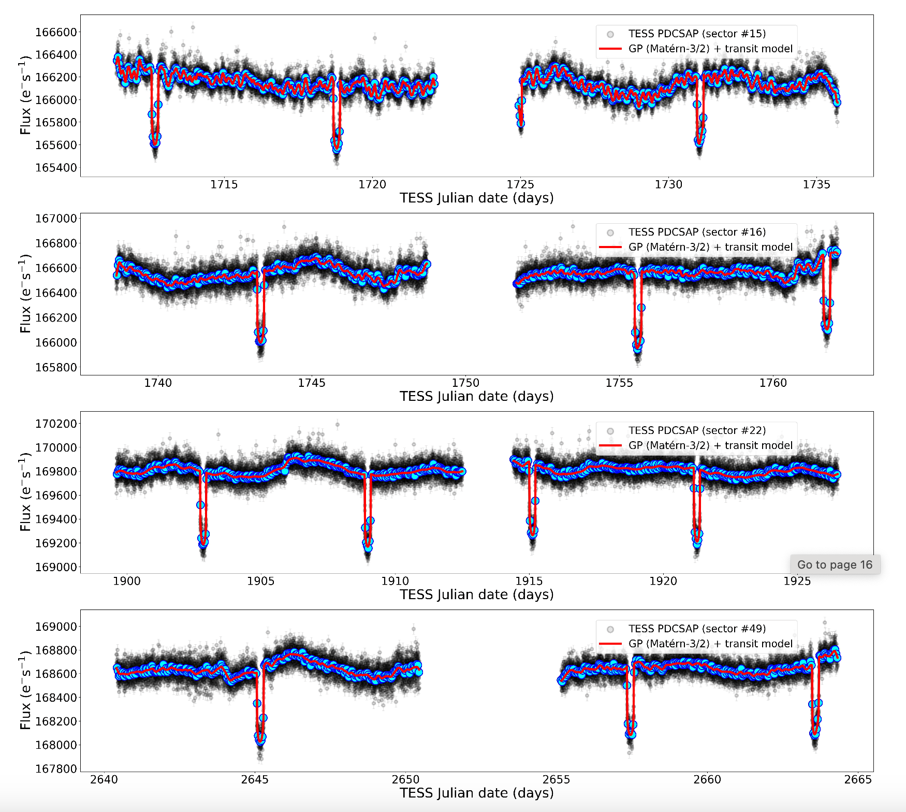
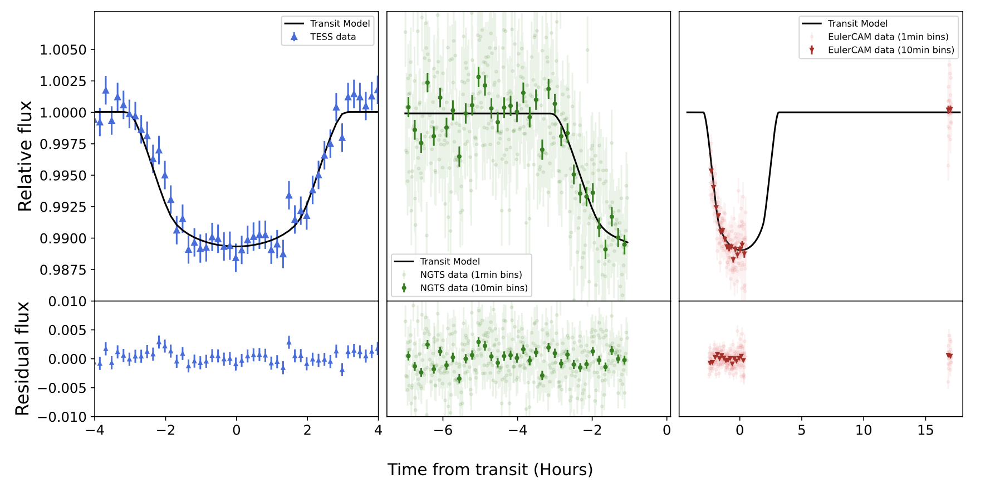
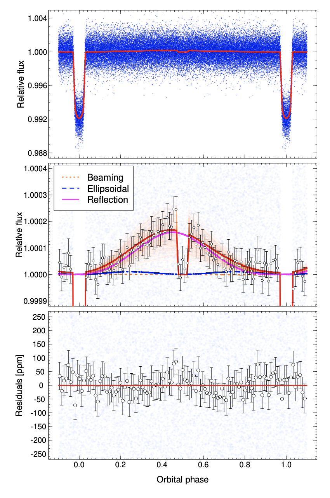

Welcome TESS followers to our latest news bulletin!
First things first – please note that the deadline for abstract submission for the third TESS science conference (July 29 – Aug 2, 2024) is Apr 12, 2024. You can find more information about the conference here.
This week, we are looking at three recent papers from the archive. Enjoy!
Signs of magnetic star-planet interactions in HD 118203. TESS detects stellar variability that matches the orbital period of a close-in eccentric Jupiter-sized companion (Castro-Gonzales et al. 2024) :
HD 118203 is a relatively bright (V = 8 mag), high proper-motion (~115 mas/yr), slightly evolved star hosting a Jupiter-sized planet with an orbital period of 6.135 days, semi-major axis of 0.086 AU, and eccentricity of about 0.3. As such, the system is well-suited for studies aimed at detecting magnetic interactions. Castro-Gonzales et al. (2024) present a detailed analysis of the system combining TESS data, ASAS-SN photometry, and spectroscopic measurements from ELODIE. TESS observed the target at 2-min cadence in Sectors 15, 16, 22, and 49, and detected the ~3.9 parts-per-thousand (ppt) transits of the planet in each sector as well as prominent out-of-transit variability with a standard deviation of about 0.46 ppt (see Fig. 1). The authors utilized a joint radial velocity and transit model to refine the parameters of the system, and search for potential signs of magnetic interactions between the host star and its planet. Castro-Gonzales et al. (2024) report evidence of stellar activity in TESS data with a periodicity of about 6.1 days – matching the orbital period – which they attribute to magnetic star-planet interactions. The authors note that the activity signal modulates on orbital timescales, exhibiting large variations in shape and amplitude, and is not present in the ASAS-SN and ELODIE data. Additionally, Castro-Gonzales et al. (2024) suggest that the rotation of the planet is expected to be pseudo-synchronous with its orbital period with a periodicity of about 3.73 days, and argue that the high orbital eccentricity of the planet is likely a critical factor for the generation of the potential magnetic interactions. Thanks to TESS, the authors were able to detect potential star-planet interactions between the close-in eccentric Jovian planet HD 118203b and its parent star.
NGTS-30 b/TOI-4862 b: An ∼1 Gyr old 98-day transiting warm Jupiter (Battley et al. 2024) :
In general, the longer the period of an exoplanet is the harder it is to detect it in transit data and the easier it is to detect it in radial velocity measurements – and vice versa. Planets that are detected in both photometric and spectroscopic observations are particularly valuable, especially if their orbital periods are relatively long. Battley et al. (2024) present the discovery and characterization of the Jovian planet NGTS-30 b/TOI-4862 b, utilizing data from TESS, NGTS, EulerCam, CORALIE, FEROS, HARPS, PFS, and SOAR. The G-type star was observed by TESS at long cadence in Sectors 9, 36, and 63, and produced a single transit in Sector 36 which, after careful scrutiny, was confirmed to be a genuine signal that originates from the target star. Subsequent analysis of observations from NGTS and EulerCam revealed an ingress in the former and a partial transit in the latter, both with the same depth as the transit in Sector 36 of TESS (about 1%), and suggesting a periodicity of about 98.3 days (see Fig. 2). Battley et al. (2024) combined the photometry with spectroscopic observations and speckle imagining in a global model to constrain the parameters of the system. The stellar properties extracted from the model indicate that the host star has an effective temperature Teff = 5455 K, mass Ms = 0.94 MSun, radius Rs = 0.91 RSun, Solar metallicity, and an age of about 1.1 Gyr. The authors’ analysis confirmed that the orbital period of the planet is Pp = 98.3 days, the orbital eccentricity is about ep = 0.3, its radius is Rp = 0.93 RJup and its mass is Mp = 0.96 RSun. The authors estimate that the equilibrium temperature of the planet is 500K at periastron and 274 K at apoastron. Capitalizing on data from TESS, Battley et al. (2024) discovered and confirmed one of the youngest known warm Jupiters, NGTS-30 b/TOI-4862 b.
The phase curve of the ultra-hot Jupiter WASP-167b as seen by TESS (Kalman et al. 2024) :
WASP-167 is a pulsating F1V star hosting a transiting ultra-hot Jovian planet with an orbital period of about 2.02 days – an excellent laboratory to study in detail star-planet interactions and exoplanet atmospheres. Notably, as the host star is a rapid rotator and is both line-poor and broad-lined, radial velocity measurements of the planet’s mass are challenging. Kalman et al. (2024) present a careful analysis of the TESS phase curve of the system and refine the orbital and physical parameters of the planets and its parent star. TESS observed WASP-167 in Sectors 10, 37, and 64 at short cadence, and detected clear, periodic transits with a depth of about 0.8%, as well as prominent out-of-transit lightcurve modulations. To reproduce the TESS photometry of the target, the authors employed a comprehensive lightcurve model accounting for ellipsoidal variability, Doppler beaming, and reflection effects, as well as the influence of stellar pulsations on these. The authors confirm that the planet has an orbital period of 2.022 days, radius of 1.6 RJup, estimate its mass to be about 0.35 MJup, argue that the latter may be considerably underestimated due to the employed lightcurve detrending, and detect a peak in the Fourier spectrum of the target near resonance with the second orbital harmonic of the planet. Kalman et al. (2024) show that the planet’s occultation depth is about 107 parts-per-million, measure a geometric albedo of about 0.34, and argue that the brightest point on the planet’s surface is offset eastward by at about 17 degrees. The authors estimate the planet’s dayside temperature to be about 2800 K, significantly below the limits provided by previous ground-based data, and obtain 2-sigma upper limits on the nightside and intrinsic temperature of 2360 K and 2340 K, respectively. Thanks to TESS, Kalman et al. (2024) were able to classify WASP-167b as an ultra-hot Jupiter, constrain its physical and orbital properties, and promote it as a prime target for atmospheric studies.
 Fig. 1: Taken from Castro-Gonzales et al. (2024). 2-min TESS photometry (grey points) of HD 118203b hosting a close-in, eccentric Jovian planet producing transits every 6.13 days, along with the best-fit joint radial velocity and transit model (red).
 Fig. 2: Taken from Battley et al. (2024). Photometry from TESS (left panel), NGTS (middle panel), and EulerCAM (right panel) along with the best-fit model for NGTS-30 b/TOI-4862 b.
 Fig. 3: Taken from Calcaferro et al. (2024). Phase-folded TESS lightcurve of WASP-167 (upper and middle panels), highlighting the prominent occultation of the planet, along with the corresponding best-fit model including ellipsoidal variability, Doppler beaming and reflection effects (middle panel). The lower panel shows the respective residuals.